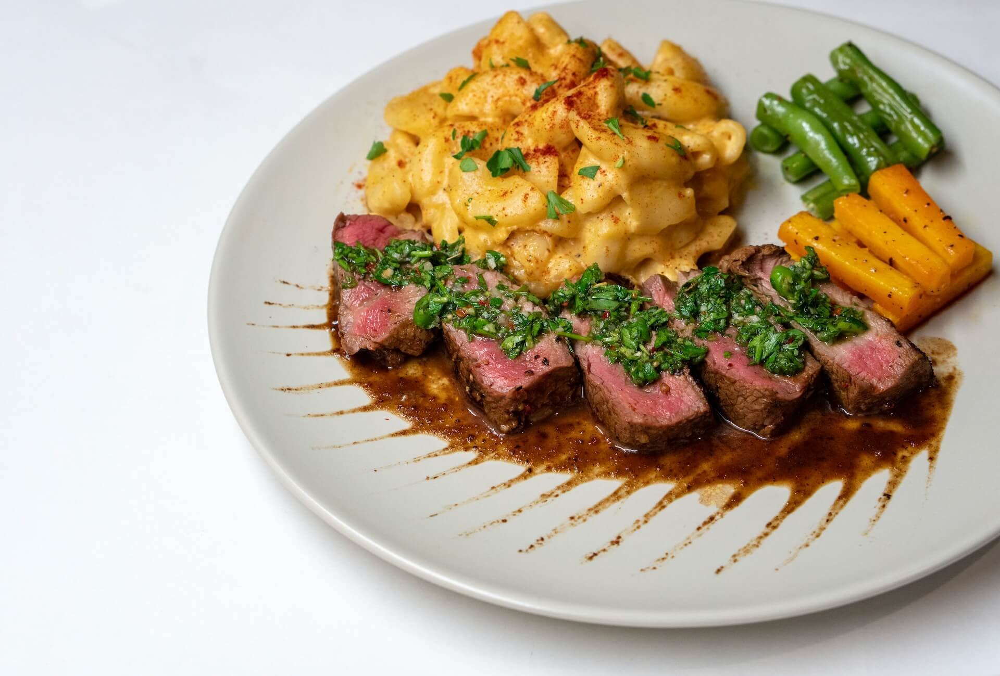

Tango, ballroom dance, musical style, and song. The tango evolved about 1880
in dance halls and perhaps brothels in the lower-class districts of Buenos Aires,
where the Spanish tango, a light-spirited variety of flamenco, merged with the
milonga, a fast, sensual, and disreputable Argentine dance; it also shows possible
influences from the Cuban habanera. In the early 1900s the tango became socially
acceptable and by 1915 was a craze in fashionable European circles. The first
tango music by known composers was published in 1910.
Argentine empanadas are savory pastries that hold a special place in
Argentine cuisine. These hand-held delights consist of a thin pastry
shell filled with a variety of savory ingredients. The fillings often
include seasoned ground beef, onions, hard-boiled eggs, olives, and spices,
creating a flavorful and satisfying combination.
Chimichurri is one of the most delicious and versatile sauces around.
It's traditionally served with grilled steak or ribs and is an essential
part of an Argentinian "parrillada" or barbecued mixed grill. It goes
great with chicken and fish, and is a must with grilled chorizo sausages.
Chimichurri works well as a marinade and also gives a spark of flavor to
vegetables.
